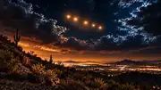

ARIZONA UFO & UAP
The Phoenix Lights

On the night of March 13, 1997, people across Arizona reported unusual lights moving through the sky. The event became known as the Phoenix Lights and remains one of the most widely discussed UFO and UAP stories connected with the state.
Witnesses in different parts of Arizona described different things. Some reported a large formation of lights moving steadily across the sky, while others described a dark shape or object with lights along its edge. Later that night, another group of lights appeared near Phoenix and was widely associated with military flare activity over the Barry M. Goldwater Range.
That distinction matters because the Phoenix Lights may involve more than one set of observations. Different reports happened at different times and locations, which is one reason the case continues to be debated decades later.
For people searching for Arizona UFO sightings, UAP cases or the Phoenix Lights, this remains one of the state's defining modern mysteries. Roadside Strange presents the case as a documented mass-sighting story without claiming a final explanation.
Roadside Strange documents reported stories, folklore and unusual history. Paranormal reports are presented as reports, not proof.